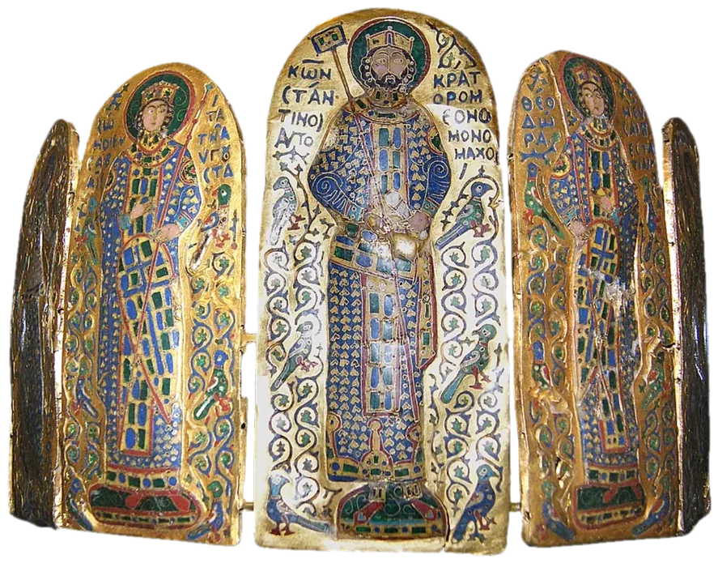
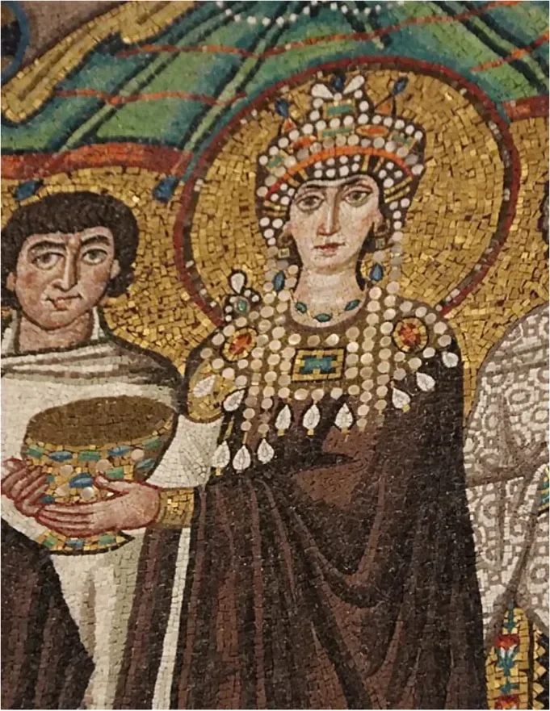
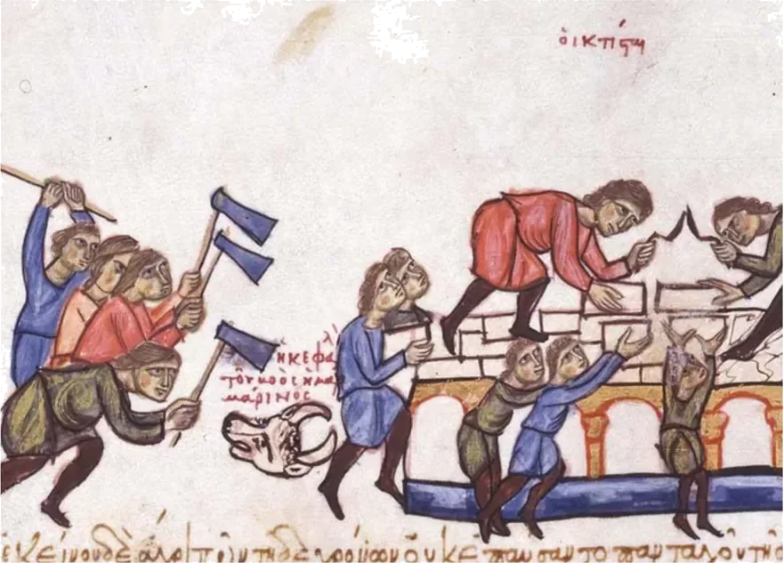
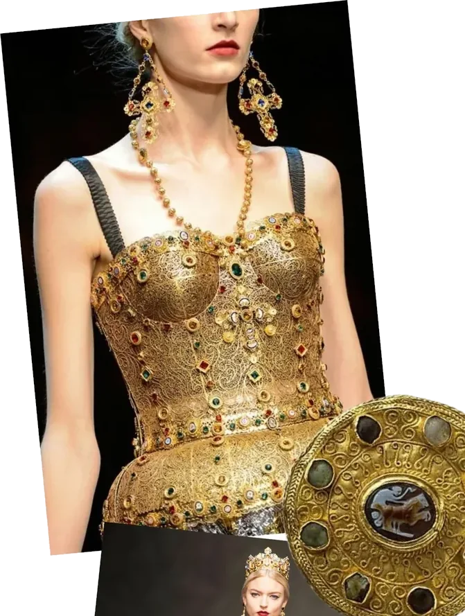
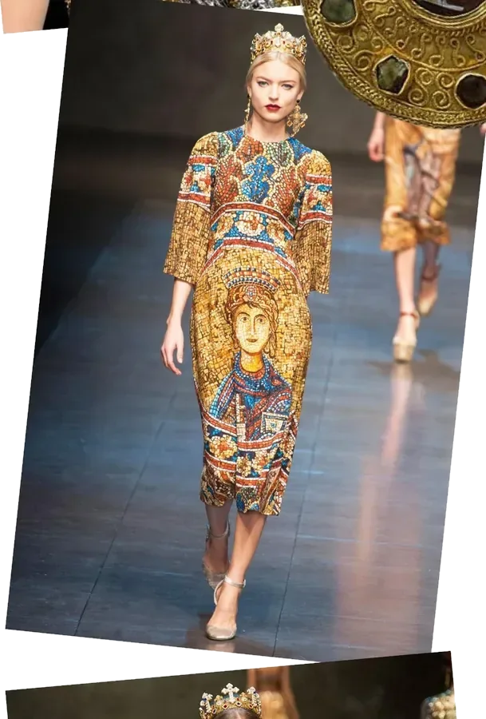
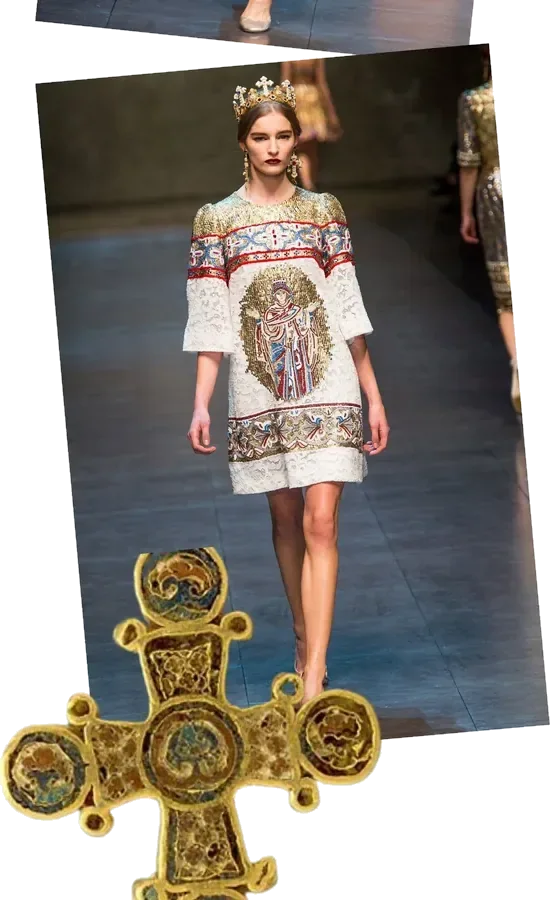

A color caused executions. Funded wars. Collapsed kingdoms. And it came from snail mucus.
In 550 AD, if you were caught wearing purple in the Byzantine Empire without imperial permission, you weren’t fined or humiliated, you were killed. Not because the emperor was paranoid — though he was — but because that single color represented something far more dangerous than fashion. It represented an economic monopoly so total, so deliberately engineered, that the entire social order of the most powerful empire on earth depended on ordinary people never being able to afford it.
This wasn’t vanity. It was infrastructure.
But while the empress sat draped in silk and purple, her pearl-encrusted crown catching the gold mosaic light of the palace throne room — the workers who built that palace, who laid those stones, who wove that silk — wore undyed wool, because the empire made sure they had no other option.
What Made Byzantium Rich?
To understand why a color could get you killed, you first need to understand what made the Byzantine Empire the wealthiest state in the medieval world for nearly a thousand years.
Constantinople sat at the exact intersection of Europe and Asia, a geographic accident that became the most profitable real estate in history. Every major trade route between East and West passed through it. Silk from China. Spices from India. Ivory from Africa. Gold from everywhere. The empire controlled the chokepoint through which all of it flowed.
But the Byzantines didn’t just tax trade. They manufactured it. The state ran its own silk workshops — called ergasteria — directly controlled by the imperial government. Private citizens could not freely produce or sell silk. The emperor decided who made it, who sold it, who exported it, and most critically, who wore it.
The Purple Deep Dive
Tyrian purple came from a sea snail called Murex brandaris. Producing a single pound of dye required crushing approximately 250,000 of them. The smell of rotting mollusks permeated coastal towns for miles. And at its peak, one pound cost the equivalent of three years of an average worker’s salary — pound for pound, worth more than gold.
The emperor’s response was simple and ruthless: he made it illegal for anyone else to wear it. These were called sumptuary laws.
Wearing imperial purple without authorization wasn’t a fashion faux pas, it was treason. The punishment was death, mutilation, or exile. Merchants who smuggled purple fabrics faced having their hands cut off. Foreign dignitaries arriving in purple were made to change before entering the palace.
The color became so powerful that Byzantine emperors were described as porphyrogennetos: “born in the purple.” Even being born near the color was a political statement.
This was scarcity weaponized.
What Everyone Else Wore
For ordinary Byzantines — craftspeople, farmers, soldiers — clothing was defined entirely by economic necessity. Undyed wool. Cheap plant-based dyes in ochre and brown. Whatever you could make or afford within the strict boundaries the law allowed.
The Byzantine state didn’t just regulate the top, it regulated everything. Sumptuary laws dictated what colors, fabrics, and embellishments were appropriate for each social tier. Wearing above your station wasn’t just simply socially awkward, it was illegal.
Byzantine fashion was the most honest economic system in history. What you wore told everyone exactly what you were worth. And the law made sure it stayed that way.

Few objects capture the Byzantine equation of wealth and power as completely as the Crown of Constantine Monomachos. Made around 1042 AD, its gold plaques are decorated in cloisonné enamel — a painstaking technique requiring artisans to lay thousands of tiny colored glass fragments between hair-thin gold wires, then fire them at precise temperatures to fuse them permanently. The result is almost hallucinatory in its detail: the emperor Constantine IX stands at the center flanked by two empresses, all three figures robed in the blue, gold, and jewel-toned colors that only the imperial court could legally commission. This was not jewelry in any ordinary sense, but a wearable economic statement.

The mosaic of Empress Theodora, completed around 547 AD in Ravenna’s Basilica of San Vitale, is the closest thing history has left us to a photograph of Byzantine power dressing. Her robes, now darkened with age, were once the deep violent purple that defined imperial authority across the empire. The jeweled collar alone represented years of an ordinary worker’s wages. Every element of her dress was a calculated economic signal. Theodora didn’t just dress to impress. She dressed to remind everyone in the room exactly who held the power — and what it cost to cross her.

This illustration from the Madrid Skylitzes — a 12th century Byzantine manuscript and one of the only surviving visual records of ordinary Byzantine life — shows laborers at work in their everyday dress. Simple tunics in basic blue, red, and green. No embellishment, no silk, no gold. Just functional clothing for people whose entire lives were spent building an empire they were legally forbidden to dress like. The contrast with the imperial court could not be more complete. Where Theodora wore purple worth more than gold, these men wore whatever undyed wool the state’s rigid sumptuary laws permitted them.
The Empire Fell. The Aesthetic Never Did.
In 1453, Ottoman forces breached the walls of Constantinople and the Byzantine Empire ceased to exist. The silk monopoly collapsed. The sumptuary laws dissolved. And yet.
In 2013, Dolce & Gabbana sent models down the runway in one of the most explicitly Byzantine collections in modern fashion history. The references were total. Dresses were printed to replicate the gold tesserae mosaic work of San Vitale, the same basilica where Theodora’s portrait still watches from the wall. Byzantine saint figures were embroidered directly onto white lace in sequins and beading. The crowns referenced imperial Byzantine headwear almost exactly — layered gold, encrusted with gemstones and pearl drops, the same construction as the Crown of Constantine Monomachos made nearly a thousand years earlier. Gold filigree corsets replicated the cloisonné enamel technique of Byzantine goldsmithing.



Dolce & Gabbana, Fall/Winter 2013
What Dolce & Gabbana understood was the same thing the Byzantine emperors had known for a thousand years — this aesthetic communicates wealth and power more effectively than almost anything else in fashion history.
The Byzantines invented that language. Dolce & Gabbana just charged €10,000 a piece to speak it.